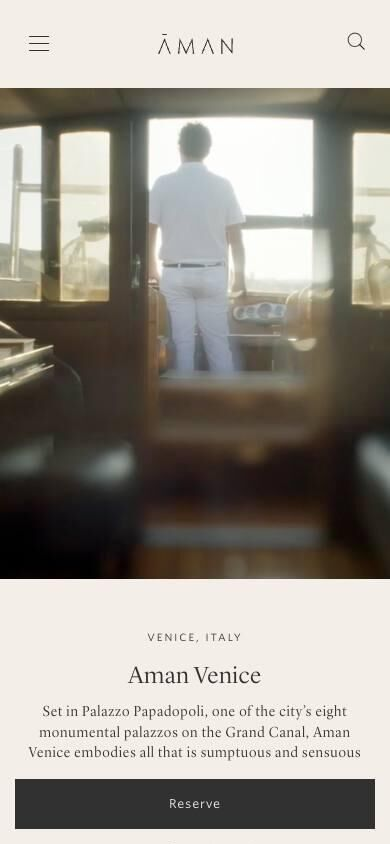
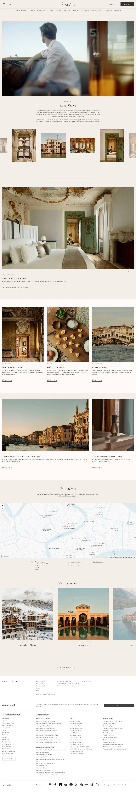

01Empfehlung
Aman Venice
Hotel · Resort-Seite
- Ein strenges, wiederholbares Modul: kleines Sperrsatz-Label, leichte Serifenzeile, kurzer Text, unterstrichener Link. Trägt jeden Abschnitt.
- Papierton, Haarlinien, Bilder ohne Rahmen-Schnickschnack: sieht auch mit normalen Fotos wertig aus.
- Erster Handy-Blick ist ruhig statt laut, Stimmen, Ablauf und FAQ fehlen. Beides bauen wir in derselben Grammatik dazu.
Ganzes9
Abdeckung6
Handy8
Schwache Fotos9

Erste 5 SekundenBild, dann Ortslabel, Name in Serife, drei Zeilen Text, feste Reservieren-Leiste. Ruhig und teuer. Wow kommt bei uns zusätzlich über einen größeren Namen und eine kursive Unterzeile.
